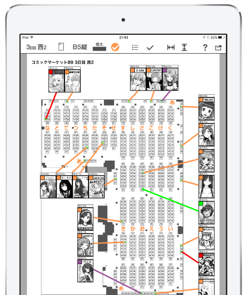
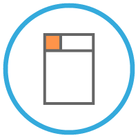

コミケ常連の人にオススメのアプリ
Webカタログ・カタロムの印刷機能に満足できなかった自分が作った地図作成特化コミケアプリ
たくさんチェックすればするほど、公式の地図印刷では見づらくなってしまう。そんな不満をこのアプリは解消します！

様々なレイアウトを
様々なレイアウトを
サポート！
サークルの表示を複数用意。ニーズにあった地図が作れます！
線の太さや用紙サイズなどその他細かい設定があなたの地図作りをサポートします。
作った地図を画像に
保存可能！
CircleMapで作った地図は画像ファイルとして保存できます！
コミケでは紙の地図も重要！画像ファイルは印刷に最適なサイズで保存されるので綺麗に印刷できます！
ダウンロードはこちらから！
主な機能
- カタログチェック
- もちろんCircleMapからサークルのチェックができます！
- アプリから直接Pixiv/Twitterの起動が可能。チェック作業がハカどる！
- チェックリスト連携
- Webカタログ・カタロムでつくったチェックリストと連携ができます。
PCでチェックしてからCircleMapで取り込んで地図作成という流れもできます。 - CircleMapやCircleCheckとBluetoothを使ってアプリ間で直接チェックリストの連携ができる！
※同じ端末内のアプリでは連携できません。 - レイアウト関連
- 地図は東123などホール全体や、東1の1ホール単位の表示が可能。
重点的に攻めるホールがある場合便利です！ - サークルの表示は”詳細”・”カット大”・”カット小”・”テキスト”の４種を用意。
- 用紙はB5・A4サイズを縦配置・横配置を用意。
東ホールには横長、西ホールには縦長など用途によって選択できます。 - チェック色によってサークルの表示切り替えが可能。
友達の分など地図を分けたいときなどに使えます。 - ファイル保存関連
- 地図画像はアプリから直接メールで送ることも可能！
作った地図を友達にそのまま遅れます。 - DropBox連携をすることでDropBoxへの保存も可能！
他にも便利な機能がたくさん!!
ダウンロードはこちらから！